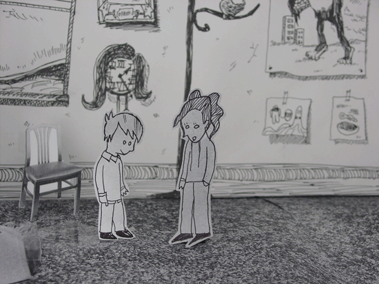

From the Orthley Set #
 I’ve taken a few shots from the Orthley Kids set, used as part of the show on Tuesday at SXSW. The other images are in a Flickr set. I’m on the road, so everything’s kinda stalled and broken around here for another week, what a sham! I really am sorry.
Rob Sanheim
Whoa. Trippy.
mindtriggerz
Wow. that’s really cool.
Matt Todd
That really is fantabulous. I love it. Not sure why it’s flickering, though; it may be a tribute to where the rest of it is hosted or just to make us ask the very thing you are called. Trippy.
M.T.
Matt Todd
Oh, stereoscopic… Interesting.
M.T.
ibroadfo
it’s magically migrainous! yay!
Piotr Usewicz
Wow… Black & White.
Jomdom
It’s profound, nutty, yet with subtle overtones of complete clarity.
Vagabond
It makes my retinas itch
Manton
Fun show yesterday at SXSW . Now I’m even more looking forward to what you’ve got planned for RailsConf.
topfunky
I recorded the whole thing bootleg-style. Check it out here:
ozlee
I think I hear “Rock Lobster” in there.
Sounds like it was an awesome presentation. Wish I could have been there.
nil
“elephants that defecate mp3s” thinly veiled web2.0 clusters? :D
technoweenie
Thanks for the great show _why! I look forward to the railsconf performance. Here are some more pics from flickr.
Olli
that pic makes me remind on my last mushroomsession ;)
Eric
Ah.. doing some stereo photography for the web. Cool.
This explains what Why is up to…
Too bad I missed everything at SXSW ….
Marc
Why’s SXSW presentation was possibly the most bizzare and awesome thing I’ve ever seen at a conference. I am disturbed and profoundly changed.
Comments are closed for this entry.